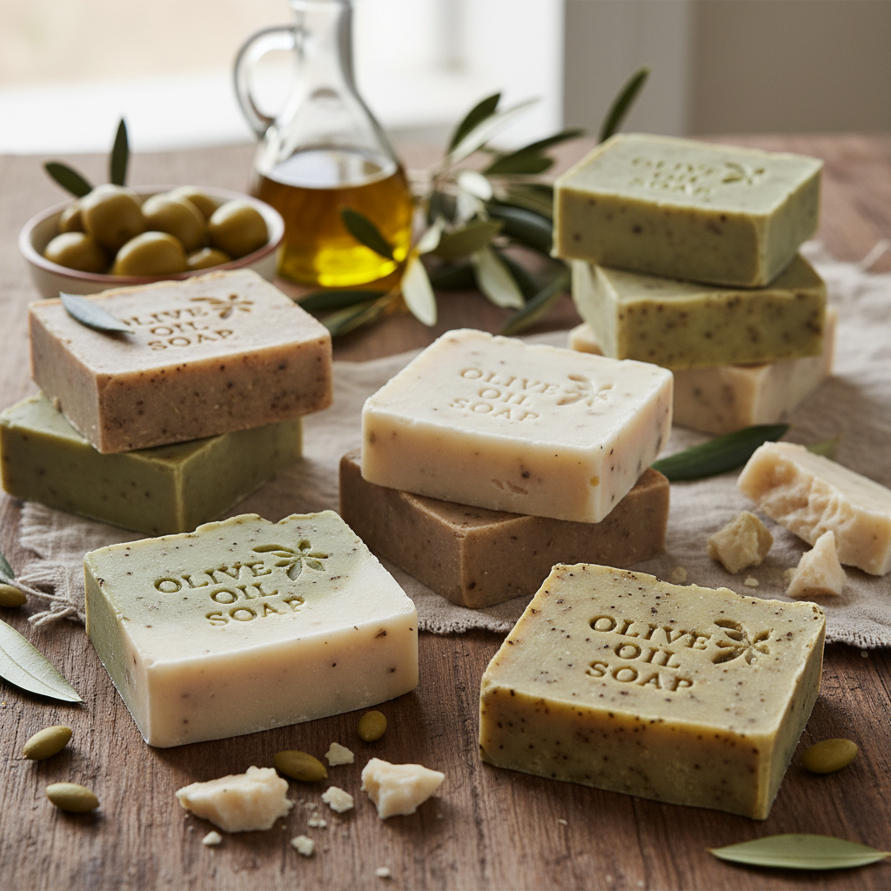

Our Olive Oil Soap is a natural, handmade product created using pure Palestinian olive oil. It is gentle on the skin and suitable for daily use. This soap helps moisturize, cleanse, and protect the skin without using harsh chemicals.It is especially good for sensitive and dry skin, leaving it soft and refreshed after every use. The simple ingredients make it a healthy and traditional skincare choice.
$5.00 per bar

Our Natural olive oil soap
Material
Olive Oil
Origin
Nablus
Weight
200g
Dimensions
8 cm × 5 cm × 2.5 cm
Customer Ratings & Reviews
Overall Rating: 4.7 out of 5 — based on 38 verified purchases
My skin has never felt better!
Rating: 5/5
Reviewer: Sarah M. —
I have been using this olive oil soap for two months now and the difference in my
skin is incredible. It lathers beautifully, rinses off cleanly, and leaves my skin
feeling soft without any greasy residue. I have sensitive skin and this is the first
soap that has not caused any irritation. Will never go back to regular soap!
Great natural soap, lovely scent
Rating: 5/5
Reviewer: Thomas B. —
I bought three bars as gifts and kept one for myself. The scent is subtle and
natural — nothing artificial about it. You can tell straight away that this is a
genuine handmade product. The bar is also quite large and has lasted me over
six weeks with daily use. Excellent value and a beautiful product. Highly recommend
to anyone looking for a natural alternative to commercial soap.
Good soap but melts quickly if left in water
Rating: 4/5
Reviewer: Nadia R. —
The soap is genuinely lovely — it smells fresh, feels gentle on the skin, and
I appreciate that it is made with natural olive oil from Palestine. My only note
is that it softens and dissolves faster than expected if left sitting in a wet
soap dish. I recommend using a draining soap holder to keep it dry between uses.
Once I made that change it lasted much longer. Four stars for the product itself
— five stars for the quality of ingredients.